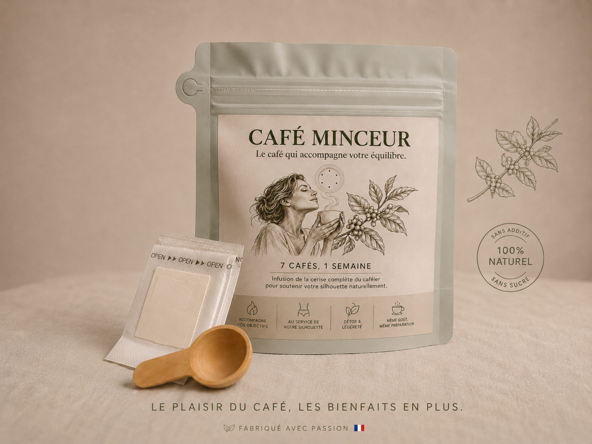

Dont -9,0 cm² de graisse viscérale dans l’étude Watanabe et al. 2019, sur 12 semaines.
Études & précautions
Pourquoi utiliser les études sur le café vert?
Parce qu’elles donnent un repère scientifique utile sur les acides chlorogéniques et le poids. Mais elles ne sont pas présentées comme une preuve directe sur ce produit.

Les chiffres faciles à retenir
Ce que les études ont observé sur le café vert.
Les études disponibles comparent généralement un groupe café vert à un groupe contrôle ou placebo. Elles montrent des signaux intéressants sur le poids, le tour de taille et la graisse abdominale, sans constituer une preuve directe sur Café Minceur.
Variation moyenne observée dans la même étude, menée sur un café riche en acides chlorogéniques.
Ordre de grandeur observé dans deux essais sur café vert, avec des groupes de 43 et 44 participants.
Ces chiffres ne promettent pas un résultat individuel. Ils expliquent pourquoi le café vert et les composés naturellement présents dans la cerise de café sont intéressants dans une démarche minceur.
| Étude | Participants | Durée | Résultat rapporté | Lecture prudente |
|---|---|---|---|---|
| Watanabe et al. 2019 | 150 adultes, 142 ont terminé l’essai | 12 semaines | -13,8 cm² de graisse abdominale, dont -9,0 cm² de graisse viscérale, et -0,7 cm de tour de taille | Étude plus large et plus longue, mais réalisée sur un café enrichi spécifique, pas sur ce produit. |
| Méta-analyse 2023 | 103, sur 3 essais randomisés | 1 à 8 semaines | Environ -1,30 kg par rapport au placebo | Signal moyen sur extrait de café vert standardisé, pas preuve directe sur le produit final. |
| Shahmohammadi et al. 2017 | 44 | 8 semaines | -3,13 kg groupe café vert, -1,65 kg placebo | Écart d’environ 1,5 kg en faveur du café vert. |
| Roshan et al. 2018 | 43 | 8 semaines | -2,09 kg groupe café vert, -0,93 kg placebo | Écart d’environ 1,2 kg en faveur du café vert. |
| Al-Dujaili et al. 2016 | 16 | 1 semaine | Environ -0,52 kg, contre -0,06 kg placebo | Étude courte, utile pour illustrer un signal initial mais pas pour garantir un résultat. |
Le raisonnement produit
Un café familier, enrichi par une utilisation plus complète de la cerise de café.
Le produit ne doit pas être présenté comme un médicament ou une molécule miracle. L’angle le plus clair est la substitution quotidienne: remplacer le café habituel par un café pensé pour accompagner l’objectif minceur.
Goût café
La base doit rester familière pour éviter la friction et encourager une prise quotidienne.
Café intégral
À expliquer seulement si nécessaire: un procédé permet d’utiliser plus largement la cerise de café.
Référence marque: Café IntégralComposés naturels
Polyphénols, fibres, polysaccharides, trigonelline, mélanoïdines et caféine naturellement présente.
Référence: café vert et poidsTransparence
Des limites claires pour rester juste.
Les études donnent un contexte scientifique, tout en gardant une distinction nette entre les résultats publiés et ce produit.
Pas une étude directe
Les essais cités ne portent pas directement sur ce café minceur.
Pas une garantie
Une moyenne observée dans une étude ne promet pas le résultat d’une personne.
Pas un traitement
Le produit ne remplace pas un avis médical, une alimentation équilibrée ou une activité adaptée.
Sources
Liens à conserver pour vérification.
Ces sources sont utiles pour documenter la page, mais le texte commercial doit rester clair et prudent.
- Étude PubMed: café riche en acides chlorogéniques, 150 adultes, 12 semaines
- Article complet PMC: Coffee Abundant in Chlorogenic Acids Reduces Abdominal Fat
- Méta-analyse PubMed sur l’extrait de café vert et le poids
- Article complet PMC reprenant les essais Shahmohammadi, Roshan et Al-Dujaili
- Avis EFSA sur café, acides chlorogéniques et allégations santé
- Règlement européen 1924/2006 sur les allégations nutritionnelles et de santé
- Essai humain: chlorogenic acid, trigonelline et réponse glucose/insuline
- Revue: mélanoïdines du café, fibres, propriétés antioxydantes et microbiote
- Revue: oligosaccharides du café, fibres antioxydantes et intérêt prébiotique